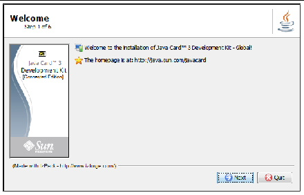
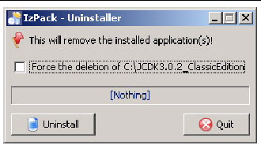
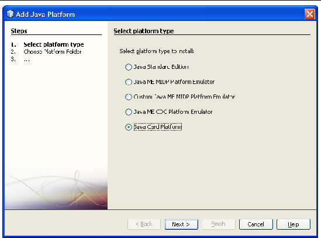

| Development Kit User’s Guide, Java Card 3 Platform, Version 3.0.2, Connected Edition |
| C H A P T E R 2 |
|
Installation |
This chapter describes the prerequisites you need to install on your system before you use the development kit, how to install the development kit and the NetBeans IDE, how to set system variables, and how to uninstall the development kit. This chapter also lists the files installed onto your system by the Connected Edition of the development kit. You can run both a Classic and Connected development kit simultaneously.
Binary and source code development kits are available for the Microsoft Windows XP SP2 operating system. Source code bundles allow you to change the development kit’s reference implementation, whereas the binary bundles allow you only to use the reference implementation.
Each development kit is provided in an executable JAR file bundle. See Chapter 1 for a description of this development kit bundle and a list of all the files installed by this development kit.
| Note - The Java Card specifications are not included in the development kit bundle. The specifications must be downloaded separately. |
The following software must be installed before installing the development kit:
This section describes how to install and set up the development kit.
|
1. Verify that the additional software required by the development kit is installed on the development system.
See Prerequisites to Installing the Development Kit for the download location and installation instructions of the required additional software.
2. Download an appropriate development kit JAR file to a directory of your choice.
3. Launch the development kit installer.
The development kit can be launched automatically when you download the JAR file or by using the Windows file manager tool to navigate to the directory containing the development kit JAR file and double clicking the file name or icon.
The development kit can also be launched by opening a Command Prompt window, navigating to the directory containing the development kit JAR file, and executing the following command from the command line:
In the command, Bundle-Filename is the name of the downloaded development kit JAR file.
The installation wizard displays the following screen.

4. Complete each action requested by the installer.
By default, the development kit for the Connected Edition is installed in:
If you specify a different installation directory, the names of the installation directory and its parent must not contain a space.
For example, the installation directory cannot be located in C:\program files because of the space in the program files directory name.
| Note - The installation directory (either the default directory or the alternate installation directory you specify) is referred to as JC_CONNECTED_HOME. |
5. Click the Finish button to complete installation.
The bundle installs files and directories containing the binary files and source code described in Directories and Files Installed From All Bundles. The files and directories are installed under the root installation directory, either C:\JCDK3.0.2_ConnectedEdition or the directory you specified during installation. The root installation directory is referred to as JC_CONNECTED_HOME in this document.
|
1. Set the JAVA_HOME system variable to the JDK root directory.
Before running the development kit, you must set the JAVA_HOME environment variable permanently in the Windows Control Panel or temporarily from the command line:
set JAVA_HOME=C:\java_home_path;
For example, if the Java platform software is stored in the c:\jdk6 directory, enter:
set JAVA_HOME=C:\jdk6;
| Note - If using the Category view, choose Windows Control Panel > Performance and Maintenance > System > Advanced to open the Environment Variables panel. |
2. Set the ANT_HOME system variable to the Ant root directory.
Before running the development kit, you must set the ANT_HOME environment variable permanently in the Windows Control Panel or temporarily from the command line:
set ANT_HOME=C:\ANT_HOME_path;
For example if Ant was installed in C:\ant\apache-ant1.6.5, enter:
set ANT_HOME=C:\ant\apache-ant1.6.5;
3. Set the JC_CONNECTED_HOME system variable to the development kit root directory.
Before running the development kit, you must set the JC_CONNECTED_HOME environment variable permanently in the Windows Control Panel or temporarily from the command line:
| Note - Some of the command line tools require that the JC_CONNECTED_HOME variable is set correctly. |
set JC_CONNECTED_HOME=C:\JC_CONNECTED_HOME_path;
For example if you installed in C:\JCDK3.0.2_ConnectedEdition, enter:
set JC_CONNECTED_HOME=C:\JCDK3.0.2_ConnectedEdition;
4. Add %JAVA_HOME%, %JC_CONNECTED_HOME%, and %ANT_HOME% to the Path variable displayed in the Environment Variables panel.
5. Add MinGW to the Path variable.
MinGW is not required if only the development kit binary bundle is installed. If the development kit source bundle is installed, set the MinGW environment variable permanently in the Windows Control Panel or temporarily from the command line:
C:\MinGW\bin;
set PATH=C:\MinGW_path;%PATH%
For example, if MinGW is installed in the C:\MinGW directory, enter:
set PATH=C:\MinGW\bin;%PATH%
| Note - If you choose to set the JAVA_HOME variable and MinGW PATH each time you run the development kit, place the appropriate JAVA_HOME variable and MinGW PATH commands in a batch file. |
A development kit binary bundle installs the subdirectories and files described in TABLE 2-1. A development kit source bundle installs all the subdirectories and files described in TABLE 2-1, plus the source subdirectories and files described in TABLE 2-2.
These files and directories are installed by the development kit under the root installation directory, C:\JCDK3.0.2_ConnectedEdition, or in the directory that you specified during installation.
The src directory is installed only from a source bundle and contains the source code for the Java Card API, the romized applications, the development kit tools, and the Java Card virtual machine.
TABLE 2-2 describes the contents of the subdirectories and files installed under the src directory.
To uninstall the development kit, Version 3.0.2, run the Uninstaller tool found in your development kit at Uninstaller\uninstaller.jar. Do not change the location of this tool. Before running the Uninstaller, it is advisable to exit all development kit tools and the NetBeans IDE. Files under the control of your OS will not be uninstalled using the Uninstaller.
In the Uninstaller’s dialog box, selecting the check box or not will have the same result, the development kit directory that the Uninstaller is in will be deleted, including the Uninstaller itself, see FIGURE 2-1.
FIGURE 2-1 Uninstalling the Development Kit

You can also uninstall a development kit for any Java Card Platform release by simply deleting all its directories and files from your hard drive.
The NetBeans IDE, version 6.8, is required to run the samples. It is also recommended as your development environment, although alternatively, the development kit tools can be used from the command line.
To use the Java Card platform-specific plugin in the NetBeans IDE, you must add and configure the Java Card Platform.
|
1. Go to http://www.netbeans.org.
Earlier versions of the NetBeans IDE and the plugin will not work with version 3.0.2 of the development kit. Within version 6.8 of the NetBeans IDE, the Java Card platform-specific plugin might already be installed. Check the installed plugins list and, if the Java card plugins are not installed, locate them on the NetBeans IDE update center and install them into the NetBeans IDE.
|
1. In the NetBeans IDE, version 6.8, go to Tools > Java Platforms and click Add Platform.
You setup the Java Card Platform as you would any other Java Platform. If the Java Card Platform does not appear on the list of platform types, you might need to exit the NetBeans IDE and restart it.

2. Select Java Card Platform and click Next.
3. Navigate to and choose the directory where you installed the Java Card Platform development kit and click Next.
In the documentation for the development kit this directory is referred to as JC_CONNECTED_HOME.
Once the installation is complete, there will be a new node, Java Card Runtimes, in the Services window. If the Services window is not already displayed, choose Window, then choose Services to activate it.
6. Confirm Java Card Platform node is listed in Services window below the Java Card Runtimes node.
7. Confirm the Default Device instance is listed in the Services window below the Java Card Platform node.
8. In the Tools > Plugins dialog box, confirm the Available Plugins Tab lists the Java Card platform-specific plugin.
| Development Kit User’s Guide, Java Card 3 Platform, Version 3.0.2, Connected Edition | 12-14-09 |
Copyright © 2009 Sun Microsystems, Inc. All rights reserved.
 Installing the Development Kit
Installing the Development Kit